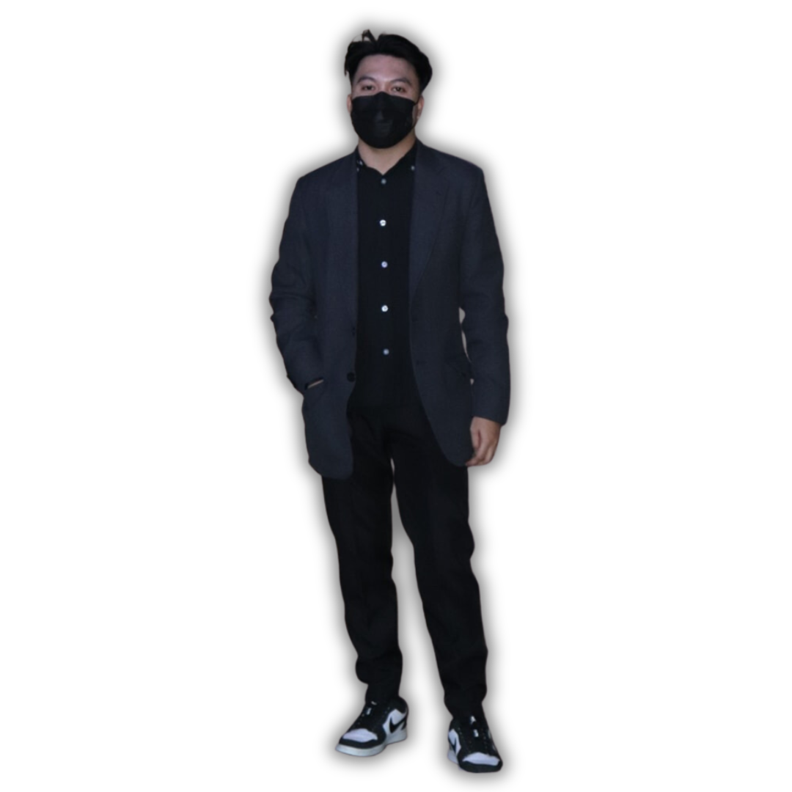

I’m Mark Adrian Basagre, I graduated this July 12, 2023 in the field of Bachelor of Science in Information Technology in Our Lady Of Fatima Antipolo Campus. I am interested applying for Jr. Web development I am familiar with various technologies such as MYSQL, HTML, CSS and PHP, I am always willing to learn new things. I am also a hard-working individual, detailed oriented and trustworthy. I’m always giving my best when it comes to work.
My hobby is playing online games like Mobile legends, Farlight84 and Ran Online.
I love Watching Anime like Jujutsu Kaisen, Demon Slayer, HunterxHunter and Also K-dramas.
My Birthday is September 24, 1998, I am 24 years old I currently living in Antipolo City